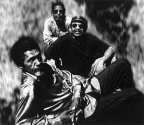

The Holmes Brothers

Провозглашенные самым ярким блюзовым открытием последнего времени, The Holmes Brothers практически все время находились в поле зрения критиков и публики. Но это не мешает называть их «открытием» даже через тридцать лет после того, как они покинули свой родной город в штате Вирджиния. Шерман Холмс, его младший брат Венделл и барабанщик Вилли Диксон поселились в Нью-Йорке, чтобы играть в местных барах.
Никогда не испытывавшие никаких музыкальных влияний, The Holmes Brothers выработали свою собственную манеру исполнения, корни которой уходят в блюз и госпел. Ритм-секция (Шерман Холмс и Вилли Диксон) создает мощную основу, на которую, как на канву, ложатся яркие, острые соло Венделла. Еще более специфично звучит вокальное трехголосие. Резкий хриплый голос Венделла, фальцет Диксона и баритон Шермана дают звучание, характерное одновременно для блюза, соул и госпел. The Holmes Brothers – тот уникальный случай, когда все три вокалиста одновременно являются и сопровождающими музыкантами.
Шерман и Венделл Холмсы родились и выросли в штате Вирджиния в маленьком городке, совершенно типичном для тех краев. Их родители, Шерман-старший и Эстер Холмс, школьные учителя, всячески поощряли в детях интерес к музыке. Оба сына занимались на пианино, но в то же самое время Шерман играл на кларнете, а Венделл – на трубе и органе. Игра на гитаре в городке не поощрялась; с точки зрения почтенных местных жителей, было в ней что-то бунтарское. Поэтому, получив начальное музыкальное образование, братья обучились игре на гитаре, что называется, по слуху. У семьи не было магнитофона, поэтому подростки слушали радио: B.B. King, Junior Parker, также госпел и кантри.
По окончании средней школы Шерман изучал теорию музыки и композицию в университете штата Вирджиния, но в свободное время подрабатывал игрой на бас-гитаре. К огромному огорчению родителей, он бросил колледж, отучившись всего два года, и в 1959 году направился в Нью-Йорк. Поработав немного там, и ощутив дух большого города, Шерман Холмс вернулся в родной городок – для того, чтобы соблазнить поездкой в Нью-Йорк младшего брата Венделла.
В начале семидесятых Венделл познакомился с Вилли Диксоном; их сотрудничество длилось около семи лет. Диксон, по прозвищу "Popsy", тоже был уроженцем Вирджинии, но вырос в Бруклине. Его музыкальные пристрастия были примерно такими же, как и у братьев, но с большим влиянием госпел.
Как-то раз, спустя несколько лет, знакомый гармонист предложил Шерману поучаствовать в блюзовом джэме на сцене одного из клубов. Тот взял с собой младшего брата, а тот, за компанию, пригласил Диксона. Этот вечер стал отправной точкой в истории The Holmes Brothers.
Успех дебютного альбома трио под названием "In The Spirit", выпущенного в 1989 году, отнюдь не был неожиданным. Это был результат долгих и упорных трудов. В 1991 году, в ходе тура по Европе, они получили предложение от Питера Гэбриэла, который пригласил их поработать в своей студии. В итоге The Holmes Brothers стали первыми американскими артистами, которые записывались на Real World. Их пластинка под названием "Jubilation" представляет собой крепкую смесь традиционной и оригинальной музыки; одновременно, в ходе работы над этой записью, The Holmes Brothers реализовали совместный проект с Van Morrison.
Напряженная студийная работа привела к тому, что гастрольный график группы также уплотнился. The Holmes Brothers играли и совсем рядом с домом, в Town Hall Нью-Йорка, и на другом конце света – в Австралии, где сопровождали в турне Питера Гэбриэла. Но, по их собственному мнению, слава никоим образом не повлияла на их отношение к жизни и к музыке – придерживаясь корней, The Holmes Brothers достигли потрясающих высот в своей области.